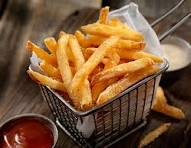

Fries Recipe

fries are deeo fried potato sticks which are often served as a side either alone or with a sauce
ingredients:
potato
cornstarch
oil
seasoning (Salt pepper)
Steps:
Cut potatoes into long cuboid shapes
coat them in cornstarch
deep fry till cooked
add seasoning
Home